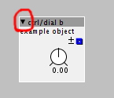
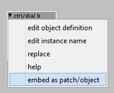
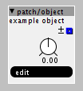
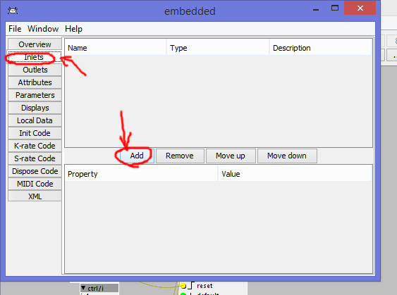
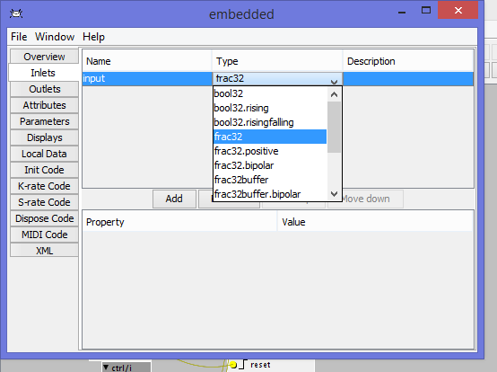
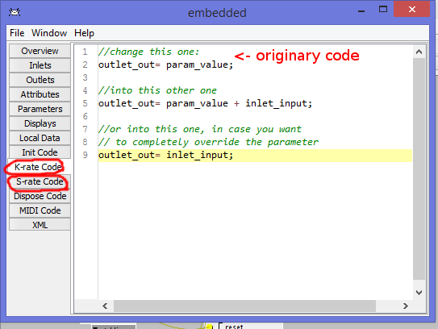
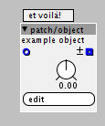

Some users often ask contributors to add modulation inlets to their objects.
While a workaround exists (adding a patch/modsource object and right-clicking on the parameter to modulate), sometimes this solution is not efficient or not available at all (see for example integer boxes).
What to do in one of these cases?
1) you can ask the contributor here on the forum to add inlets (lame!) (just kidding!!!) (not really: we are lazy)
2) you can HACK THE OBJECT in few steps
Click on the little arrow of the object you want to edit

Embed as patch/object, this way you can't do permanent disasters. DON'T EDIT OBJECT DEFINITION, UNLESS YOU'RE VERY SKILLED IN TROUBLESHOOTING C++ CODE

Click on edit

Select the inlet tab on the left and then add as many inlets as you need.

Give a name to such inlets, something you can remember. Do not use spaces or symbols, just letters or numbers.
As for the type: dials (knobs) correspond to frac32 inlets (blue). Buttons and toggles correspond to bool32 inlets. Integer boxes correspond to int32 inlets. All the other stuff is just labels on the object (you can experiment on this).
Also, buffered inlets refer to the audio rate stuff. It's not the case to touch those.

Now the tricky part: you have to search in the k-rate and s-rate code every reference to the parameter you want to hack. You'll find stuff like param_ParameterName.
You have a few options here: you can add the inlet to the parameter (see the middle portion of image) or override it completely (delete param_ParameterName and substitute it with inlet_InletName)
Remember to add ";" at the end of rows (the code won't start otherwise).
If you choose to override completely a parameter you can then go in the parameters tab and delete the parameter.

You're done!

For this example i hacked ctrl/dial.
Something can go wrong while doing this. Aside from syntax errors, there are some cases in which a parameter is bound inside a very specific range. Outside that range weird stuff might happen (pleasantly weird but also patch-crashing weird).
This might happen because of variable overflowing, for reading/writing arrays outside their range or for similar reasons.
Troubleshooting these errors is often hard and requires skill. If you don't have the skill, just be careful with what you feed into these inlets. You could use math/sat and math/satp objects as a quick fix


{kind=link}